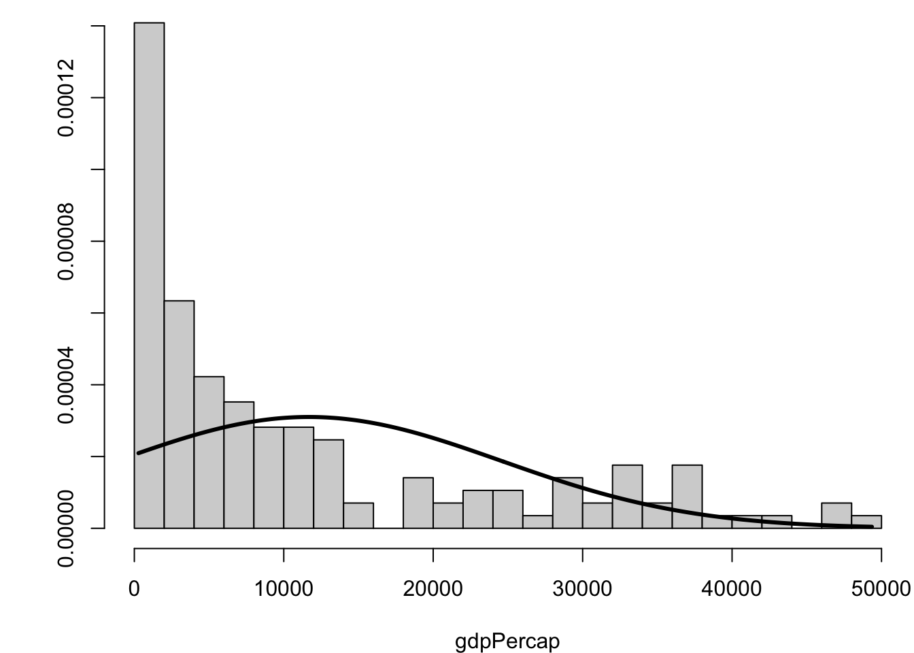
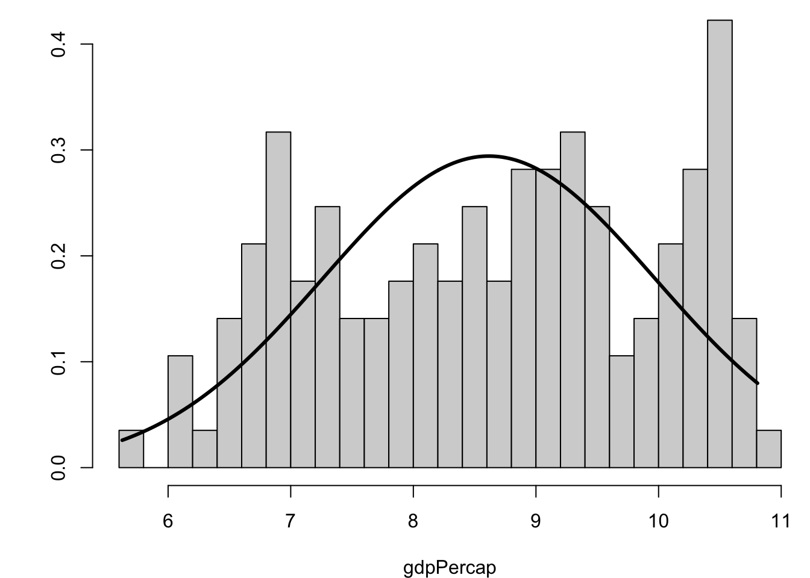
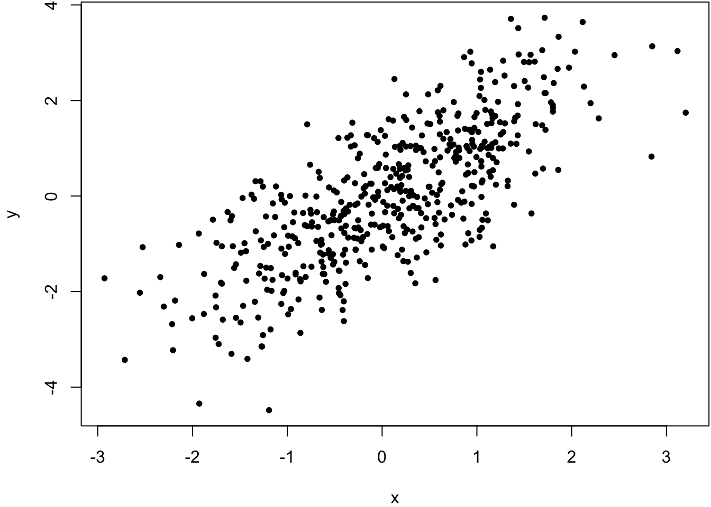
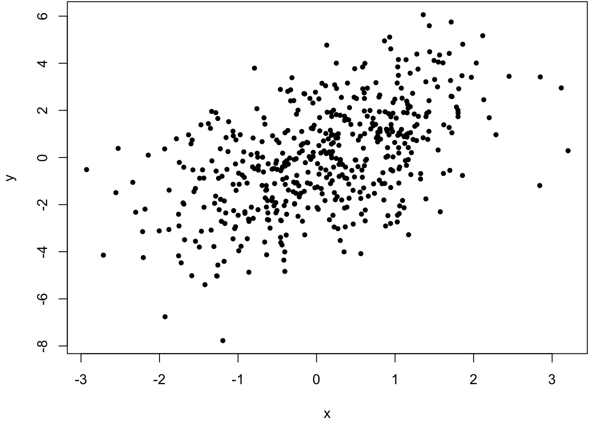
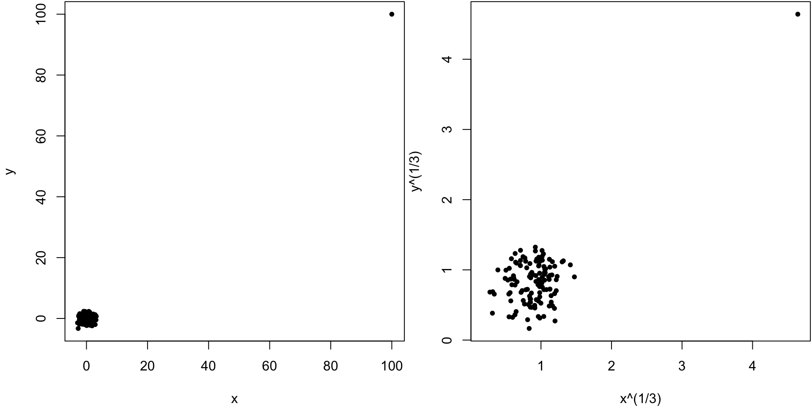

13 Numerical Summaries of Data
13.1 Useful Summaries
Center: mean, median, mode
Quantiles: percentiles, five number summaries
Spread: standard deviation, variance, interquartile range
Outliers
Shape: skewness, kurtosis
Concordance: correlation, quantile-quantile plots
13.2 Measures of Center
Suppose we have data points \(x_1, x_2, \ldots, x_n\).
Mean: \[\overline{x} = \frac{x_1 + x_2 + \cdots + x_n}{n}\]
Median: Order the points \(x_{(1)} \leq x_{(2)} \leq \cdots \leq x_{(n)}\). The median is the middle value:
- \(x_{((n+1)/2)}\) if \(n\) is odd
- \((x_{(n/2)} + x_{(n/2+1)})/2\) if \(n\) is even
Mode: The most frequently repeated value among the data (if any). If there are ties, then there is more than one mode.
13.3 Mean, Median, and Mode in R
Let’s calculate these quantities in R.
> mean(mtcars$mpg)
[1] 20.09062
> median(mtcars$mpg)
[1] 19.2
>
> sample_mode <- function(x) {
+ as.numeric(names(which(table(x) == max(table(x)))))
+ }
>
> sample_mode(round(mtcars$mpg))
[1] 15 21It appears there is no R base function for calculating the mode.
13.4 Quantiles and Percentiles
The \(p\)th percentile of \(x_1, x_2, \ldots, x_n\) is a number such that \(p\)% of the data are less than this number.
The 25th, 50th, and 75th percentiles are called 1st, 2nd, and 3rd “quartiles”, respectively. These are sometimes denoted as Q1, Q2, and Q3. The median is the 50th percentile aka the 2nd quartile aka Q2.
In general, \(q\)-quantiles are cut points that divide the data into \(q\) approximately equally sized groups. The cut points are the percentiles \(1/q, 2/q, \ldots, (q-1)/q.\)
13.5 Five Number Summary
The “five number summary” is the minimum, the three quartiles, and the maximum. This can be calculated via fivenum() and summary(). They can produce different values. Finally, quantile() extracts any set of percentiles.
> fivenum(mtcars$mpg)
[1] 10.40 15.35 19.20 22.80 33.90
> summary(mtcars$mpg)
Min. 1st Qu. Median Mean 3rd Qu. Max.
10.40 15.43 19.20 20.09 22.80 33.90
>
> quantile(mtcars$mpg, prob=seq(0, 1, 0.25))
0% 25% 50% 75% 100%
10.400 15.425 19.200 22.800 33.900 13.6 Measures of Spread
The variance, standard deviation (SD), and interquartile range (IQR) measure the “spread” of the data.
Variance: \[s^2 = \frac{\sum_{i=1}^n \left(x_i - \overline{x}\right)^2}{n-1}\]
Standard Deviation: \(s = \sqrt{s^2}\)
Iterquartile Range: IQR \(=\) Q3 \(-\) Q1
The SD and IQR have the same units as the observed data, but the variance is in squared units.
13.7 Variance, SD, and IQR in R
Variance:
> var(mtcars$mpg)
[1] 36.3241Standard deviation:
> sd(mtcars$mpg)
[1] 6.026948Interquartile range:
> IQR(mtcars$mpg)
[1] 7.375
> diff(fivenum(mtcars$mpg)[c(2,4)])
[1] 7.4513.8 Identifying Outliers
An outlier is an unusual data point. Outliers can be perfectly valid but they can also be due to errors (as can non-outliers).
One must define what is meant by an outlier.
One definition is a data point that less than Q1 or greater than Q3 by 1.5 \(\times\) IQR or more.
Another definition is a data point whose difference from the mean is greater than 3 \(\times\) SD or more. For Normal distributed data (bell curve shaped), the probability of this is less than 0.27%.
13.9 Application to mtcars Data
> sd_units <- abs(mtcars$wt - mean(mtcars$wt))/sd(mtcars$wt)
> sum(sd_units > 3)
[1] 0
> max(sd_units)
[1] 2.255336
>
> iqr_outlier_cuts <- fivenum(mtcars$wt)[c(2,4)] +
+ c(-1.5, 1.5)*diff(fivenum(mtcars$wt)[c(2,4)])
> sum(mtcars$wt < iqr_outlier_cuts[1] |
+ mtcars$wt > iqr_outlier_cuts[2])
[1] 213.10 Measuring Symmetry
The skewness statistic measures symmetry of the data. It is calculated by:
\[ \gamma = \frac{\sum_{i=1}^n (x_i - \overline{x})^3/n}{s^3} \]
A negative number is left-skewed, and a positive number is right-skewed.
Note: Use of \(n\) vs. \(n-1\) may vary – check the code.
13.11 skewness() Function
In R, there is a function call skewness() from the moments package for calculating this statistic on data.
> library(moments)
> gapminder %>% filter(year==2007) %>% select(gdpPercap) %>%
+ skewness()
gdpPercap
1.211228
> gapminder %>% filter(year==2007) %>% select(gdpPercap) %>%
+ log() %>% skewness()
gdpPercap
-0.1524203
> rnorm(10000) %>% skewness()
[1] 0.00579991713.12 Measuring Tails
The tails of a distribution are often described as being heavy or light depending on how slowly they descend.
This can be measured through statistic called kurtosis:
\[ \kappa = \frac{\sum_{i=1}^n (x_i - \overline{x})^4/n}{s^4} \] As with skewness \(\gamma\), use of \(n\) vs \(n-1\) may vary.
13.13 Excess Kurtosis
For a standard Normal distribution (mean 0 and standard deviation 1), the kurtosis is on average 3.
Therefore, a measure called “excess kurtosis” is defined to be \(\kappa - 3\). A positive value implies heavier tails and a negative value implies lighter tails.
13.14 kurtosis() Function
In R, there is a function call kurtosis() from the moments package for calculating this statistic on data.
> library(moments)
> gapminder %>% filter(year==2007) %>% select(gdpPercap) %>%
+ kurtosis()
gdpPercap
3.29593
> gapminder %>% filter(year==2007) %>% select(gdpPercap) %>%
+ log() %>% kurtosis()
gdpPercap
1.871608
> rnorm(10000) %>% kurtosis()
[1] 2.95585313.15 Visualizing Skewness and Kurtosis


13.16 Covariance and Correlation
It is often the case that two or more quantitative variables are measured on each unit of observation (such as an individual).
We are then often interested in characterizing how pairs of variables are associated or how they vary together.
Two common measures for this are called “covariance” and “correlation”, both of which are most well suited for measuring linear associations
13.16.1 Covariance
Suppose we observe \(n\) pairs of data \((x_1, y_1), (x_2, y_2), \ldots, (x_n, y_n)\). Their sample covariance is
\[ {\operatorname{cov}}_{xy} = \frac{\sum_{i=1}^n (x_i - \overline{x}) (y_i - \overline{y})}{(n-1)}, \] which meausers how the two variables “covary” about their respective means. Large positive numbers indicate concordance of deviations from the mean, and large negative numbers indicated discordance (so opposite sides of the mean).
13.16.2 Pearson Correlation
Pearson correlation is sample covariance scaled by the variables’ standard deviations, meaning correlation is a unitless measure of variation about the mean. It is defined by
\[\begin{eqnarray} r_{xy} & = & \frac{\sum_{i=1}^n (x_i - \overline{x}) (y_i - \overline{y})}{\sqrt{\sum_{i=1}^n (x_i - \overline{x})^2 \sum_{i=1}^n (y_i - \overline{y})^2}} \\ \ & = & \frac{\sum_{i=1}^n (x_i - \overline{x}) (y_i - \overline{y})}{(n-1) s_x s_y} \\ \ & = & \frac{ \operatorname{cov}_{xy}}{s_x s_y} \end{eqnarray}\]where \(s_x\) and \(s_y\) are the sample standard deviations of each measured variable. Note that \(-1 \leq r_{xy} \leq 1\).
13.16.3 Spearman Correlation
There are other ways to measure correlation that are less reliant on linear trends in covariation and are also more robust to outliers. Specifically, one can convert each measured variable to ranks by size (1 for the smallest, \(n\) for the largest) and then use a formula for correlation designed for these ranks. One popular measure of rank-based correlation is the Spearman correlation.
> x <- rnorm(500)
> y <- x + rnorm(500)
> cor(x, y, method="pearson")
[1] 0.7542651
> cor(x, y, method="spearman")
[1] 0.7499555
> x <- rnorm(500)
> y <- x + rnorm(500, sd=2)
> cor(x, y, method="pearson")
[1] 0.5164903
> cor(x, y, method="spearman")
[1] 0.5093092
> x <- c(rnorm(499), 100)
> y <- c(rnorm(499), 100)
> cor(x, y, method="pearson")
[1] 0.9528564
> cor(x, y, method="spearman")
[1] -0.02133551